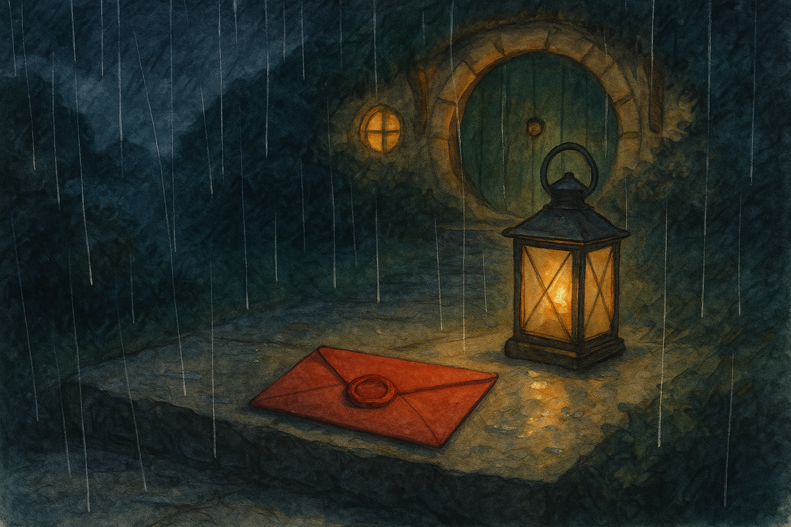

Fourth Age, in the Shire when the lanes turn black with rain and even a late knock sounds like news.
It is a curious thing that a promise can be carried in so small a lump of wax.
The night the letter came I had already put my ink away. The kettle had been coaxed into its second good temper, and the fire was at that stage where it speaks softly to itself, as if telling a story it has told a hundred times and never tired of.
Outside, rain went on like a patient drummer. It did not rattle and swagger as summer storms do, but fell in a steady manner that makes the world feel smaller: hedges become walls, lanes become trenches, and even a proper hobbit-hole seems a little more private, a little more besieged.
I was considering a small piece of seed-cake—only considering it, mind—when there came a knock at the round door.
Not a neighbour’s knock. Not three brisk taps, friendly and certain. This was one, and then another, and then a pause as if the knocker’s hand had grown doubtful in the wet.
I set down my cup, took up the lantern, and went to see what foolishness had wandered to Bag End at such an hour.
When I opened the door the rain breathed in, cold as a cellar. The Hill was a blur of darkness. No one stood on the step. For a moment I thought the wind had played a trick; it can knock a twig against a door and laugh at a hobbit’s caution.
Then I saw it.
There, in the shallow curve of the doorstep where water gathers, lay an envelope—thick paper, plain as an honest shirt, already darkened with rain. A single bead of water sat on the seal like a jewel on a knuckle.
The seal itself was red wax, pressed with a mark: a small leaf, not oak and not maple, but the sort a Shire child cuts with scissors when he cannot get the shape quite right. The wax had not run. The edges were sharp, as if it had been stamped only moments ago in a warm room.
I looked up and down the path. The only sound was water in leaves and the faint hush of the rain on the turf. No footsteps, no cough, no retreating figure. Whoever had brought it had done so quietly, and had gone quickly—or else had not been there at all.
I picked the letter up. The paper was cold and damp, but the wax was dry beneath my thumb.
Now, I have had my share of odd parcels, and I have learned that if a thing arrives without a person attached, it is wise to treat it with caution. But the seal’s little leaf was so shabby and familiar that it put me in mind of the Shire-moot, of notes pinned to notice-boards, of small apologies sent to neighbours when hens go wandering. It did not feel like danger. It felt like somebody’s poor attempt at dignity.
I brought it inside, shook off the rain, and set the letter on the table. The lantern threw a circle of light around it as if it were an object of ceremony.
I ought to have left it until morning. That is what a sensible person would do with midnight letters and unclaimed wax. But the rain has a way of making a body restless. It stirs the old roads in your mind; it makes you think of people caught out in it, and of roofs that do not hold.
Besides, the seal was speaking to me. Not in words, of course. Wax does not speak, unless you melt it. But it insisted, with that silent firmness some small things possess, that it had been made for my eyes and not for later.
I took a knife—carefully; there is no need to stab a message—and slid the point beneath the seal. The wax resisted as wax does, proud of being whole. Then it gave with a little crack, like a dry twig snapped between fingers.
The paper opened with a soft sigh. Inside was a single sheet, folded twice, and on it a hand had written in ink that had not yet fully lost its shine.
Mr. Baggins,
I have borrowed something and I mean to return it. This is not a jest. If you do not want it back, say so, and I will put it where it cannot trouble you.
I cannot come in daylight. The roads have eyes now. They did not, once, but they do.
At the first thin moon after three nights of steady rain, leave a lantern burning on the post by the party-field gate. Do not come out. I will know. You will have what is yours, and I will have what is mine: the keeping of my word.
— A traveller who remembers your door
I read it twice, and a third time, though the words did not change. The fire whispered. The kettle clicked as it cooled. Outside, the rain kept its patient measure.
Borrowed something. Return it. A traveller who remembers your door.
Now, there are some travellers I have known and some I have only heard of; there are strangers with honest faces, and strangers with hands too quick. But there are not many who would write such a thing, not many who would trouble themselves with wax and paper instead of simply putting what they had taken into a sack and keeping on. And fewer still who would speak of a promise as if it were a coin to be paid.
I sat for a long while with the letter open before me.
One might laugh. One might say, It is only a note. Yet it set my thoughts roving in a way that reminded me of old days: of roads that did not belong to any king, of shadows that walked without lanterns, and of the uneasy knowledge that some things lost are not lost because no one has them, but because no one dares bring them back.
I took the broken wax seal between finger and thumb. It had held fast in the rain like a stubborn pebble. I turned it over. A faint ridge ran through the wax, as if the seal had been pressed against something uneven—something like a thread.
That was my first real prick of unease.
For wax, you see, takes the truth of what it touches. It will show you a thumbprint, a grit of sand, a splinter of wood. It does not keep secrets well. And this wax had a ridge that felt like it belonged to cord, not to fingers.
I fetched the lantern close and examined the envelope. Along the edge where it had been folded there were tiny marks, faint as flea-bites. Not the sorts of dents you get from a hurried crease, but neat little pricks, one after another, as if something sharp had been laid in a line and pressed.
It came to me all at once—one of those small realizations that makes you feel slow for not having had it sooner—that the letter had been stitched shut before it was sealed.
Not sewn like cloth, but laced: a fine thread through the paper, and then wax over the knot to hide it. A trick, perhaps, to keep curious hands from reading it on the road. Or a way of making sure the message arrived intact, without being opened and closed again by someone with a clever knife.
Or else a way of making a promise heavier than paper.
I unfolded the letter again and smoothed it on the table. The ink was plain enough, but in the spacing of it—between lines, beneath certain words—there was a care that felt more like craft than haste.
At the first thin moon after three nights of steady rain, it said. That was not a Shire way of marking time, not quite. It sounded like the sort of thing a person says when he has lived too long with the sky for a clock.
I did not sleep well. I would like to say I did, and that I put the letter away and went to bed as sensible hobbits do. But the rain and the words together kept me half-awake, listening for another knock, another sign that the traveller had not gone far.
Nothing came.
The next day was no brighter. Rain slid down every leaf and made the lane by the Water look like a ribbon of dark glass. Folk in Hobbiton were cheerful enough—hobbits have a talent for being cheerful over puddles—but there was a quiet caution in the way doors were shut a little sooner and lamps were hung a little higher. The King’s Peace lay over the Shire like a new blanket: warm, yes, but heavier than the old ways, and not everyone had grown used to it.
In the afternoon I went out under my umbrella and walked, more from restlessness than need, down toward the Party Field. The gate was shut, and the post beside it stood slick with rain, its top dark with wet. I could picture a lantern there plainly enough—its little square light, its brass knobs, its glass panes streaming.
I looked around. A pair of lads were dragging a sodden cart. Old Mrs. Brown was arguing with a roof that refused to stop dripping. Nothing secretive. Nothing travelling. Yet as I turned back up the lane I had the feeling, sharp as a pin in a cuff, that someone had watched me and then looked away before I could meet his eyes.
The rain went on for three nights, as if determined to be the very measure named in the letter. On the fourth evening it eased. Cloud thinned. A pale moon came up like a clipped coin, and the edges of it were sharp enough to cut the darkness into pieces.
That was the first thin moon, as close as I could reckon it. I told myself, as I polished the lantern and trimmed its wick, that I was doing it out of caution—better to be ready, better to know what business was making a person skulk about the Shire and trouble honest doorsteps with wax.
Yet there was something else in me besides caution. Curiosity, of course—hobbits are not immune. But also a queer pity, for anyone who would go to such pains to keep a promise.
When the sky had gone fully dark I took the lantern down the Hill. The grass was wet and cold underfoot. The air smelled rinsed, as if the world had been scrubbed. Frogs, pleased with themselves, made small noises in the ditches.
I set the lantern on the post by the Party Field gate and lit it. The flame caught, steadied, and threw a square warm light onto the wet wood. Then I turned and walked away, just as the letter had told me.
Do not come out.
So I did not. I went home and sat by the window with the curtain drawn just enough that I could see the faint glow down the lane. I had a book open on my lap. I did not read a word of it.
Time in such moments is a strange thing. It stretches. It becomes full of every tiny sound: a mouse in the wall, a coal settling, a far-off owl turning its head. I began to feel foolish. I began to think the whole business was some prank played by youngsters who had heard too many tales.
Then, just when the candle in the sitting-room guttered low, the lantern-glow down the lane moved.
Not the light itself, for it stayed on the post. But something passed through it, cutting it for an instant into a dozen broken shapes—like rain on glass—before the light steadied again.
I rose and went to the door. I did not open it. I put my hand on the latch and listened.
Far down by the gate a hinge creaked. Once. Then again. The sound carried up the wet lane clear as if there were no distance at all. A small thing was being opened carefully, and someone was trying very hard not to be heard.
A minute passed, perhaps two. Then, softly, there came the sound of the gate closing.
After that, nothing.
I waited longer than I wished to, and then I took my lantern and went down the Hill again. I told myself I was being brave. The truth is I was being stubborn. There is a difference.
The Party Field gate stood shut, as it always did. My lantern still burned on the post. Rainwater dripped from the top of it in slow clear drops.
On the ground at the foot of the post lay a small bundle wrapped in oilcloth. And on top of the knot was another lump of red wax, stamped with the same shabby little leaf.
I knelt and touched the bundle. It was dry. I lifted it and carried it home with the care one uses for something that might be harmless and might not.
Inside, by the table, I unwrapped it.
It was a key.
Not a Shire key—those are plain and serviceable—but a long thin key of old make, dark with age, the sort that belongs to a chest that has sat too long in an attic. A strip of leather had been tied to it, and on the leather, pressed into the wax, was the leaf again.
Under the key was a second paper, smaller than the first. This one had been written quickly, and the ink had bled a little, as if the writer’s hand had trembled or the air had been damp.
I took it years ago when I had no right, and I have carried it longer than I meant to. I thought it would keep me safe. It did not. It only kept me owing.
It belongs to you, though you may not know it. It fits what you keep shut from yourself.
I do not ask forgiveness. I have no claim to it. But I have brought it back, and that is the best I can do in this world.
Do not try to find me. The roads have eyes now, and I am tired of being seen.
— The same traveller
I sat very still with the key in my hand.
There are keys one recognizes at once, because they fit a lock you use every day. This key did not. Yet my fingers knew its weight. And my memory, which is a cupboard with far too many shelves, creaked open an old door.
There is a chest under a spare bed in Bag End—an old travelling chest with iron bands, brought back from roads I do not often speak of. It has been shut for a long time. Not because it holds anything dangerous, exactly, but because it holds things that smell of smoke and stone and fear: small reminders that the world is wider than comfortable hills and well-swept floors.
The chest has a lock, and I had mislaid the key years ago. I told myself I did not mind. I told myself it was just as well, because whatever was in there was better left to sit quietly and grow dust.
Now the key lay in my hand, cold and heavy, as if it had been waiting patiently to be returned to me by a stranger with a sore conscience.
I went upstairs and fetched the chest out. The iron was cold under my palms. I set it on the rug by the fire and held the key over the lock. For a moment I hesitated, for there is a kind of courage required to open what you have chosen to keep shut.
Then I pushed the key in.
It fit as if it had never been gone.
The lock turned with a soft click. No thunder. No sorcery. Only the small sound of something made whole again.
Inside were my old travelling things: a worn cloak, a cracked cup of tin, a pouch with a few foreign coins, a small notebook with its corners chewed by time. And beneath them, wrapped in cloth, a smooth grey stone the size of an egg.
I had forgotten the stone, or pretended to. It was nothing grand. I had picked it up in a bleak place where stones are the only kind of company. I had carried it for reasons I would not have been able to explain to a tidy-minded hobbit, and then, when I came home, I had put it away as one puts away a memory that does not fit the room.
I unwrapped it now.
The stone was warm.
Not warm like a coal, but warm like a hand that has held it a long time. When I turned it over I saw a mark scratched on one side: a little leaf, poor and imperfect.
My breath caught. I had not made that mark. Not knowingly. Yet there it was, answering the wax-seal as a face answers its own mirror.
Then, in the quiet that followed, I understood the traveller’s words: It fits what you keep shut from yourself.
Some debts are not owed to other people. They are owed to your own past. The traveller had carried my key, yes—but I had carried my forgetting. He had returned the one, and by doing so he had forced me to return the other.
I sat with the stone in my palm until the fire burned low. Outside, rain began again, light as a whisper. In the sound of it I could almost hear footsteps retreating down a wet lane, not running, not hiding—only going on, as travellers do.
In the morning I took the red wax-seal and the two letters and put them in the chest beside the stone. Then I shut the lid and turned the key once more.
I did not throw the key away. That would have been tidy, but it would not have been honest. I hung it on a hook by my desk where I keep the things that remind me of promises—promises made to other folk, and promises made to myself. It hangs there still, and when rain taps at the windows I sometimes touch it, just to feel its weight and remember that there are people in the world who will walk a wet road to pay what they owe, even if no one is watching.
And if you ever find a wax-sealed letter on your own doorstep in the rain, do not laugh. Bring it in. Dry it by the fire. Read it by good light. A promise, however small, deserves that much courtesy.
— Bilbo